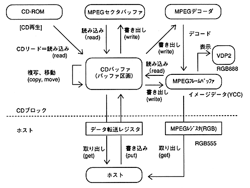

Return to previous page ｜ Return to menu ｜ Go to next page
-
5. CD block structure
- The features and logical structure of the CD block as seen from the host are shown below.
-
(1) Data format
- The CD buffer manages the stream in fixed-length (2352 bytes) sector units regardless of the device.
However, the effective data length in one sector does not necessarily match 2352 bytes for input / output with the device. For the host, a variable length between 2048 and 2352 bytes can be set.
-
(2) Stream selection circuit
- The function to separate and store the stream is realized by a mechanism called aperture / buffer partition. These functions are regarded as logical elements (selectors). By combining selectors, construct a circuit that selects the required stream.
-
(3) Device
- CD and MPEG are regarded as logical devices that generate and absorb streams. The flow of the stream is controlled by connecting a device to the stream selection circuit.
-
5.1 Data flow
- The overall data flow for the CD block is shown in Figure 5.1.

Figure 5.1 Data flow of the entire CD block
Return to previous page ｜ Return to menu ｜ Go to next page